Pokédex / #071
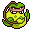
Victreebel #071
GrassPoison
Lures prey into its mouth with a honeylike aroma. The helpless prey is melted with a dissolving fluid.
Generation 1 · Kanto
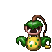
Stats
| Attack | 105 | |
|---|---|---|
| Defense | 65 | |
| Sp. Atk | 100 | |
| Sp. Def | 70 |
In the wild
| Wild level | 50–60 |
|---|---|
| HP | 80 |
| Experience | 15 |
| Egg groups | Grass |
Evolution
- Evolves from Weepinbell at level 50, with a Leaf Stone.
Moves
| Level | Move | Type | Category | Power | Energy | Cooldown | Effect | |
|---|---|---|---|---|---|---|---|---|
| 1 | Tackle | Normal | Physical | 15 | 15 | 1s | Tackle is one of the most common and basic moves a Pokemon learns. It deals damage with no additional effects. | |
| 1 | Leaf Tornado | Grass | Special | 65 | 75 | 18s | Leaf Tornado deals damage and has a 30% chance of lowering the target's Accuracy by one stage. | |
| 1 | Stockpile | Normal | Status | – | 90 | 10s | Raises the user's Defense and Special Defense by one stage and charges up power for use with companion moves Spit Up or Swallow. | |
| 1 | Swallow | Normal | Status | – | 90 | 120s | Swallow recovers a varying amount of HP depending on how many times the user has used Stockpile. It recovers 25%, 50% or 100% of the user's maximum HP if the user stockpiled one, two or three times respectively. | |
| 1 | 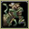 | Wrap | Normal | Physical | 35 | 45 | 13s | Wrap deals damage and lower the Speed of the target by two stages. |
| 1 | Spit Up | Normal | Special | 100 | 150 | 30s | Spit Up deals varying damage depending on how many times the user used Stockpile. The base power is 100, 200 or 300 if the user stockpiled one, two or three times respectively. | |
| 1 | 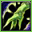 | Vine Whip | Grass | Physical | 45 | 50 | 8s | Vine Whip inflicts damage and has no secondary effect. |
| 1 | 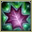 | Sleep Powder | Normal | Status | – | 85 | 100s | Sleep Powder puts the target to sleep. |
| 1 | 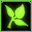 | Razor Leaf | Grass | Physical | 18 | 60 | 7s | Razor Leaf deals damage and has an increased critical hit ratio. |
| 15 | 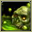 | Poison Powder | Poison | Status | – | 30 | 20s | Poison Powder poisons the target. |
| 17 | 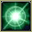 | Stun Spore | Normal | Status | – | 55 | 10s | Stun Spore paralyzes the target. |
| 23 | Acid | Poison | Special | 40 | 40 | 6s | Acid deals damage and has a 10% chance of lowering the target's Special Defense by one stage. | |
| 27 | 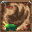 | Knock Off | Dark | Physical | 65 | 100 | 20s | The move does more damage if the target has a held item. |
| 32 | Leaf Storm | Grass | Special | 13 | 140 | 32s | Leaf Storm deals damage but lowers the user's Special Attack by two stages after attacking. | |
| 35 | Gastro Acid | Poison | Status | – | 120 | 90s | The user hurls up its stomach acids on the target. The fluid eliminates the effect of the target's Ability. | |
| 41 | Poison Jab | Poison | Physical | 80 | 80 | 12s | Poison Jab inflicts damage and has a 30% chance of poisoning the target. | |
| 44 | Leaf Blade | Grass | Physical | 90 | 90 | 14s | Leaf Blade deals damage and has an increased critical hit ratio. | |
| 47 | 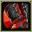 | Slam | Normal | Physical | 80 | 80 | 12s | Slam inflicts damage and has no secondary effect. |
| 50 | Wring Out | Normal | Special | 120 | 90 | 18s | The power of Wring Out varies between 1 and 120 depending on how much HP the opponent has. The more HP the opponent has, the more damage this move will do. Its damage is calculated by the following formula: Base Power = 120 x (Opponent's Current HP/Opponent's Maximum HP) |
Field abilities
Cut
Special abilities
Chlorophyll
Egg moves
Acid SprayBelchBullet SeedClear SmogEncoreGiga DrainIngrainLeech LifeMagical LeafNatural GiftPower WhipSynthesisTickleWeather BallWorry Seed
Technical machines
BideBullet SeedDouble EdgeDouble TeamEnergy BallGiga DrainHyper BeamMega DrainMimicRageReflectRestSludge BombSoftboiledSolar BeamSubstituteSwords DanceTake DownToxic
Drops
| Item | Amount | Chance | |
|---|---|---|---|
| seed | 1–18 | 100% | |
| frostbite herb | 1–4 | 80% | |
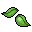 | leaf | 1 | 66.7% |
| gracidea | 1 | 44.4% | |
| revival herb | 1 | 44.4% | |
| fancy fabric | 1 | 16.7% | |
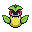 | victreebel doll | 1 | 0.1% |
| Meadow Plate | 1 | 0.05% | |
| Toxic Plate | 1 | 0.05% | |
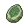 | Leaf Stone | 1 | 0.02% |
| TM 56 | 1 | 0.01% | |
| held miracle seed | 1 | 0.01% | |
| held poison barb | 1 | 0.01% | |
| victreebelite | 1 | 0.0004% |